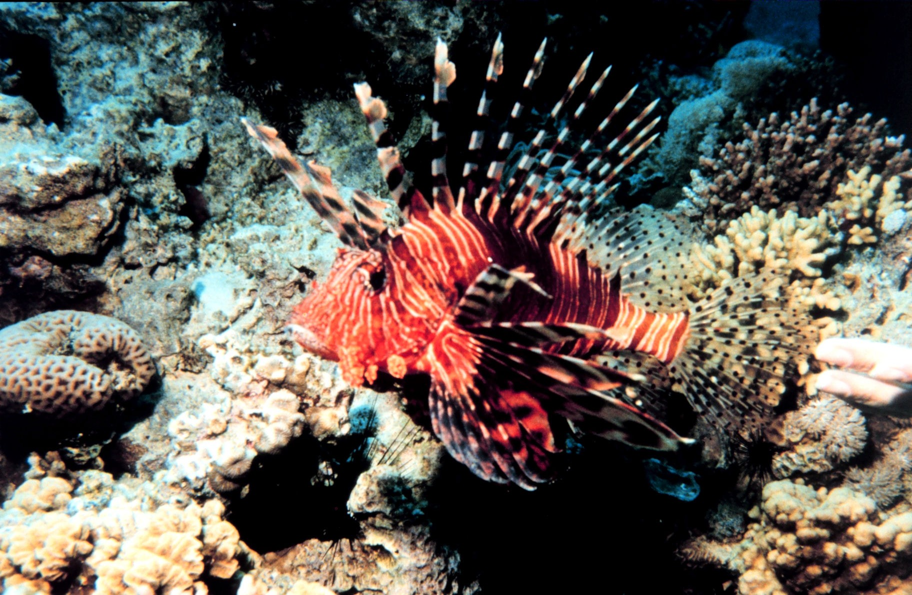
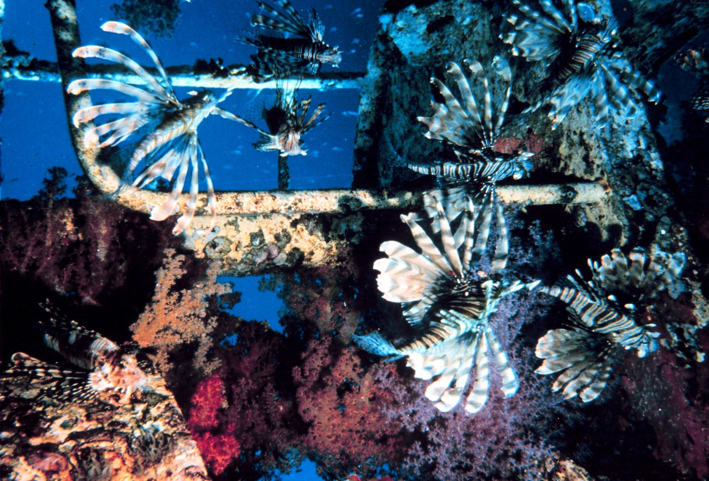
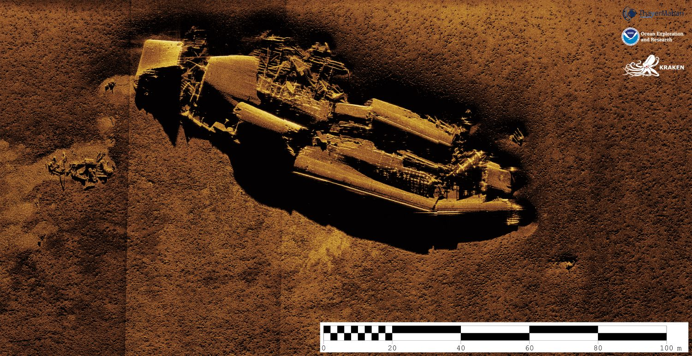

USV B01
Unmanned Surface Vehicle
المركبة السطحية غير المأهولة B01
USV B01 is an unmanned surface vehicle concept for detecting naval mines and other underwater hazards. Working at the water surface, it surveys an area in a cross-hatch grid, scans the water column and the seabed below it with multibeam sonar, and gives the operator an explained decision and a recommended action for every target.
B01 مركبة سطحية غير مأهولة لكشف الألغام البحرية وغيرها من الأجسام الخطرة تحت الماء. تعمل على سطح الماء، فتمسح المنطقة بمسحٍ شبكي متقاطع، وتفحص عمود الماء وقاع البحر تحتها بالسونار متعدد الحزم، ثم تعطي المشغّل لكل هدف قرارًا مُفسَّرًا وإجراءً موصى به.
Implemented: the software simulation on this site. Proposed: the B01 vessel, its sensors, links and power, not yet built or tested.

- Survey depth band
- 1–30 m below the water surface (concept)
- Sensing
- Multibeam sonar and water-column acoustic data, with RTK GNSS, IMU, cameras and radar + AIS (proposed)
- Output
- Risk-assessed targets with an explained decision and a recommended action
About USV B01
An unmanned surface vehicle built around the team's own B01 hull design. Working at the water surface, it surveys an area, detects underwater objects with sonar, assesses whether they may be hazardous, explains each decision and tells the operator which targets to inspect first.
The problem
Coastal and offshore waters hold marine life, natural features and man-made objects side by side: shipwrecks, debris, lost equipment and, in some areas, old ordnance. Some of these are hazards to navigation or to people working in the water; most are not.
Different sensing methods provide different types of information about underwater targets. Acoustic sensing can remain useful in poor visibility, while target interpretation still requires analysis of multiple characteristics. No single sensing source answers the question “what is this object, and is it a hazard?” on its own.
What the system does
USV B01 covers the survey area with a grid (cross-hatch) method: a complete set of parallel survey lines, then a second complete set at right angles over the same area. Its multibeam sonar and water-column acoustic data detect underwater targets, and RTK GNSS with the IMU gives each target its position. Each target is analysed, classified and given a risk level, a risk type and a decision with an explanation. When the evidence is not enough, the system reports the object as unknown and asks for verification instead of forcing a class.
Targets are marked on the survey map and reported to the operator over the vessel's radio links.

Survey environment
B01 works at the water surface. Its sonar looks down through the water column to the seabed, and the concept targets a survey depth band of 1–30 metres below the surface. This is a conceptual range; the vessel and its sensors have not been tested or certified across it.
How it works
From the water to the operator: USV B01 senses the area below it, detects targets, classifies them, assesses their potential risk, explains each decision and recommends an action.
Underwater Environment
The water column and seabed below B01, 1–30 m deep (concept).
Sensor / Acoustic Data
Multibeam sonar and water-column acoustic data, positioned with RTK GNSS and an IMU.
Target Detection
Candidate objects are found in the sensor data and given a target ID and a detection time.
Target Feature Analysis
Shape, geometry, structure, size category, movement and difference from the background are examined.
Object Classification
Marine life, man-made structure or potential hazardous object — or unknown when the evidence is not enough.
Risk Assessment
Non-hazardous, potential hazard (or high potential hazard), or unknown and requiring verification.
Risk Type Identification
For example navigation / obstruction risk or potential explosive hazard.
Explainable Decision
A decision together with the evidence and the rule that led to it.
Target Marking
The target is marked at its position on the survey map.
Recommended Action
Continue the survey, inspect the target, or verify it.
Local Data Storage
Target records and raw sensor data are stored on board.
Data Transfer / Operator System
Priority target records reach the operator over encrypted radio links: UHF, 4G or satellite.
Sensors, communication and power Proposed
Multibeam Sonar
A multibeam echosounder looking down from the hull: seabed mapping, bathymetry and acoustic target detection.
Water-Column Acoustic Data
Acoustic returns between the surface and the seabed, used to detect potential targets in the water column.
RTK GNSS
Precise position of the vessel, so every target is recorded with an accurate location.
IMU
Roll, pitch, heave and heading of the vessel, used to correct the sonar data for the vessel's motion.
Cameras
Daylight and thermal cameras on the mast, for the surface picture around the vessel.
Radar + AIS
Radar shows surface traffic and obstacles; AIS identifies the ships that broadcast it. Both support safe navigation.
Communications: UHF / 4G / Satellite
Three radio links connect B01 with the operator and the ground control station: UHF, 4G and satellite. Communication is separate from the sensing layer: the sensors observe the environment, the links carry the results.
Encryption: we will use the latest available encryption version.
Link specifications: TBD.
Power: Li-ion battery, solar, generator
A Li-ion battery pack, integrated solar cells and a generator power the vessel and its sensors.
Capacities and endurance: TBD.
All sensors, links and power sources are proposed for B01. They are not yet integrated or tested, and their models and specifications are TBD.
Classification, risk and decision
Each target is analysed from its shape, geometry, structure, size category, movement where applicable, acoustic characteristics and difference from the surrounding background. The classification, the risk assessment and the recommended action are kept as three separate results.
Non-Hazardous
Marine life, and objects with no immediate hazard. Decision: continue survey / log observation.
Potential Hazard
Wrecks, obstructions and other man-made structures. Decision: requires inspection. A potential mine is a high potential hazard; it always requires verification and is never reported as confirmed.
Unknown — Requires Verification
Objects without enough evidence for a reliable class. The system says “unknown” instead of guessing. Decision: requires verification.
| Feature | Evidence |
|---|---|
| Rigid / geometric structure | Detected |
| Non-biological appearance | Detected |
| Biological morphology | Not detected |
| Size category | Large |
| Acoustic return differs from surrounding background | Detected |
- Classification
- Man-Made Structure
- Risk
- Potential Hazard
- Risk type
- Navigation / Obstruction Risk
- Decision
- Requires Inspection
Potential risk is expressed as a priority for the operator to review; the system does not determine danger with certainty. The decision engine in this prototype is rule-based and explainable. Trained recognition models are future development and are not part of it.
Verification and background comparison
Multi-pass verification Conceptual
- Primary pass (Pass A)
- Target detected
- Orthogonal pass (Pass B), perpendicular heading
- Evidence comparison
- Decision update
The grid is surveyed twice: a complete horizontal lawn-mower pass, then a complete perpendicular pass over the same area. Every target is therefore observed from two survey headings about 90° apart (multi-aspect observation), and the two observations are compared before the decision is updated. A second heading adds evidence; it does not guarantee a correct classification. No trained model is involved.
Environmental / acoustic background Conceptual
A detected return is compared with the surrounding seafloor and water column. A return that stands out from its background is stronger evidence that an object is present. In the demo this comparison is a simulated evidence item; no trained anomaly-detection model is claimed.
Data transfer Conceptual
Radio links carry limited data, especially over satellite, so the concept keeps the large raw sonar data on board and sends compact target records first.
- Sensors
- Onboard Processing
- Target Detection
- Target Analysis
- Target Record
- Local Storage
- Data Prioritization / Compression
- Encrypted Radio Link: UHF / 4G / Satellite
- Ground Control Station / Operator
Sent first: priority event data
Kept on board
Raw and large sensor datasets stay in onboard storage for later retrieval. Link specifications: TBD.
Selected Red Sea fish
Marine-life recognition is shown with selected Red Sea species. It separates marine life from man-made objects and potential hazards; it does not attempt to recognise every species. The demo uses the lionfish as its marine-life example.


B01 design
USV B01 is built around the team's own hull design: a faceted, ultra-low-profile hull that works at the water surface, with a short mast for the sensors that look around the vessel. The cutaway in the render shows the internal equipment bay. Move over the image to inspect the details.
- Platform
- Unmanned Surface Vehicle (USV)
- Hull
- Faceted, ultra-low-profile — team design
- Survey depth band
- 1–30 m — concept
- Sonar
- Multibeam sonar, water-column acoustic data — proposed
- Positioning
- RTK GNSS + IMU — proposed
- Surface awareness
- Cameras, radar + AIS — proposed
- Processing
- Onboard data processing — concept
- Communication
- UHF / 4G / satellite, encrypted — proposed; specifications TBD
- Power
- Li-ion battery, solar, generator — proposed; capacities TBD
- Detection
- Underwater object detection
- Decision
- Explainable risk assessment
- Survey
- Two-pass crosshatch grid survey — concept
Interactive demo
Software simulation of the proposed USV B01 mission: a two-pass crosshatch survey (a horizontal lawn-mower pass, then a perpendicular pass over the same area) that detects underwater objects, assesses their potential risk, re-observes every target from a second heading and explains every decision.
- Primary Sweep — Pass A horizontal
- Transition to orthogonal pass
- Orthogonal Crosshatch Sweep — Pass B vertical
- Cross-Pass Verification
- Mission Complete
- Scanning
- Detection
- Analysis
- Classification
- Risk assessment
- Decision
- Alert & marking
- Verification
Survey area — two-pass crosshatch
Simulated navigation dataSurvey coverage — two passes
Simulation estimateTarget Observation
Reference image — not a live feed
Analysis
Simulation / concept demonstrationTarget log
| Target | Detected | Identification | Classification | Risk | Decision | Detected by | Observations — pass, line, heading (Sim.) | Cross-pass check | Position (Sim.) | Depth (Sim.) |
|---|
Results
What the project has produced so far is software: the simulation on this page. It is kept apart from the field capabilities proposed for the B01 vessel.
Software outcome Simulation — implemented
Calculated by the interactive demo's survey model. These are software results, not field measurements.
Field capabilities Proposed / conceptual
Proposed for B01. None of these has been built, integrated or tested at sea yet.
- The B01 vessel and its hull (design stage)
- Multibeam sonar and water-column survey at sea
- Survey depth band of 1–30 m below the surface
- Target positions from RTK GNSS and the IMU
- Surface picture from cameras, radar and AIS
- Encrypted UHF / 4G / satellite links to the operator
- Li-ion battery, solar and generator power
- A trained recognition model (future development)